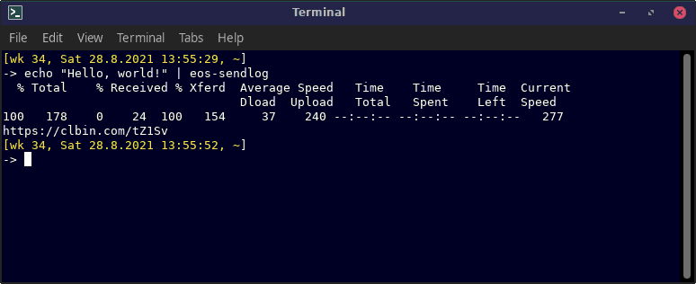

Sends a (text) file from standard input to pastebin, shows the
service URL where the file is stored, and saves the returned URL
to
~/.config/eos-sendlog.txt.

Configurable variables in file
/etc/eos-sendlog.conf:
| Variable | Description |
|---|---|
EOS_SENDLOG_URI |
URI of the service that saves
files. Supported values: https://clbin.com (default) http://ix.io |
Configuration file example:
# file /etc/eos-sendlog.conf:
EOS_SENDLOG_URI=http://ix.iocat log.txt | eos-sendlog
lspci -vnn | eos-sendlog